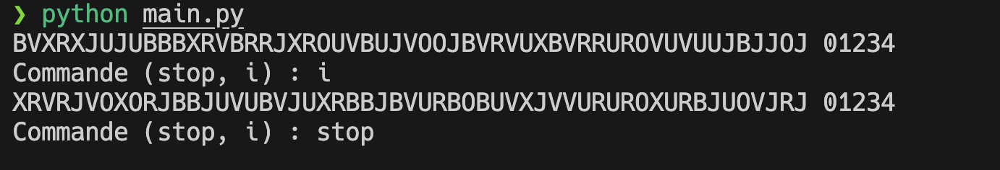
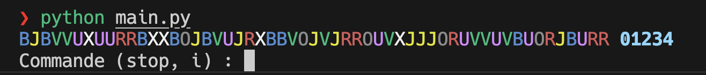
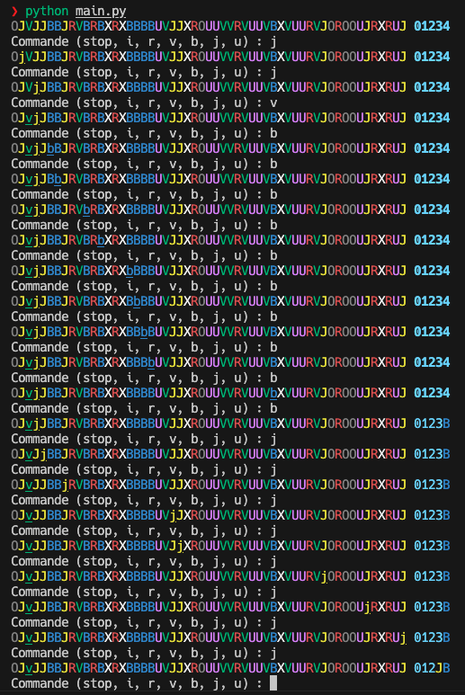
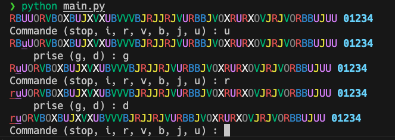
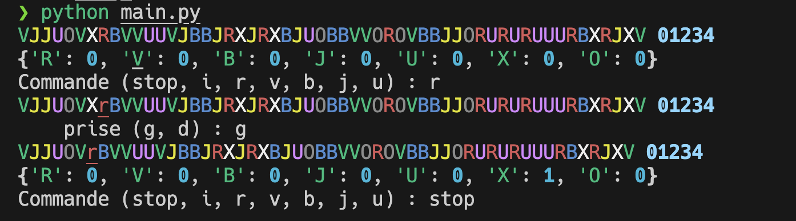
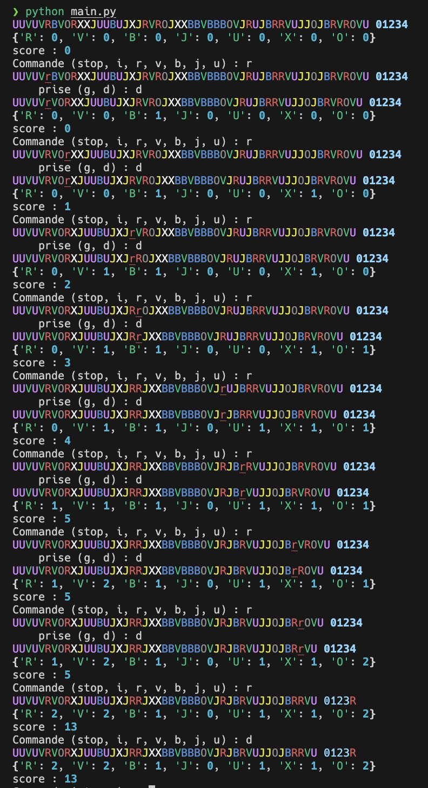

Coder le Big Point
Le but de ce DS est de coder le magnifique jeu de plateau Big Points.
- Règles en français du Big Points
- Youtube en anglais de BGG (pas pendant le DS...)
Le jeu n'est plus trouvable en l'état et c'est dommage. La version actuelle, moins abstraite et avec plus de règles s'appelle Bites.
On peut cependant encore jouer à bites en utilisant les règles originales du big points, ouf !
Commencez par lire rapidement la règle avant de vous lancer dans le sujet proprement dit.
Rendu
Le rendu du DS consiste en deux parties :
- le code que vous êtes parvenu à rendre sur Amétice.
- un écrit regroupant les différentes questions hors code.
Code
Le code évoluera au fil des questions, c'est normal. Ne rendez que la version finale de celui-ci. En revanche, il est indispensable d'avoir du code fonctionnel.
Avant chaque nouvelle question, sauvegardez votre code actuel pour pouvoir y revenir si besoin.
Le code est constitué de trois fichiers :
- le programme principal :
main.py - les classes :
classes.py - les tests des classes :
test_classes.py
Chaque question est bâtie sur la question précédente pour au final arriver à un jeu fonctionnel. Il est donc indispensable de finir la question précédente avant de passer à la suite.
Texte
Chaque question aura une partie à coder et une partie textuelle. Vous rendrez cette dernière sur une feuille à part.
Q1
Q1.1 : texte
Quelle est la fonction de chaque partie d'un programme (programme principal, classes et tests) ?
Quelle est la partie la plus importante ?
Q1.2 : code
Pour l'instant, votre programme doit consister en un seul fichier main.py dont le but est d'afficher une piste sur le terminal et à la mélanger plusieurs fois pour observer le résultat du mélange.
Le fichier main.py doit contenir la boucle suivante, qui affiche le plateau et permet de mélanger la piste :
r = ""
random.shuffle(piste)
while r != "stop":
print(plateau(piste))
r = input("Commande (stop, i) : ")
if r == "i":
random.shuffle(piste)
0n choisit de représenter chaque jeton par une lettre représentant sa couleur : O et X pour noir et blanc, R, V, B, J et U pour rouge, vert, bleu, jaune, violet, respectivement.
Complétez le fichier main.py :
- gérez les imports
- créez la liste
piste - créez la fonction
plateau
Pour pouvoir l'exécuter et obtenir le résultat ci-après (aux tirages aléatoires près).

Q2
La question Q1 était là pour poser les bases du projet. On va maintenant pouvoir bâtir les classes (et leurs tests) permettant de le mener à bien.
Q2.1 : texte
Quel est le but des méthodes python commençant et finissant par __ (2 underscore) ?
Quel est le but de __str__ ?
Proposez une modélisation UML des classes Plateau (qui va remplacer et améliorer la fonction plateau de la première question), Piste Jeton et Podium telle que
-
la classe suivante fonctionne :
class Plateau: def __init__(self): self.piste = Piste() self.piste.melange() self.podium = Podium() def __str__(self): s = str(self.piste) s += " " s += str(self.podium) return s -
ces tests passent :
from classes import Jeton, Piste def test_jeton(): jeton = Jeton("R") assert jeton.couleur == "R" def test_piste(): piste = Piste() couleurs = {"R": 0, "V": 0, "B": 0, "J": 0, "U": 0, "X": 0, "O": 0} for x in piste.jetons: assert isinstance(x, Jeton) couleurs[x.couleur] += 1 assert couleurs == {"R": 9, "V": 9, "B": 9, "J": 9, "U": 9, "X": 5, "O": 5} -
la classe
Podiumsoit la plus simple possible -
et le main suivant fonctionne :
from classes import Plateau plateau = Plateau() r = "" while r != "stop": print(str(plateau)) r = input("Commande (stop, i) : ") if r == "i": plateau.piste.melange()
Q2.2 : code
Modifier le fichier main.py et créez le fichier test_classes.py comme demandé dans la questions Q2.1
Coder les différentes classes dans le fichier classes.py pour que le programme fonctionne et soit cohérent avec votre réponse à la question Q2.1.
Quel test proposeriez-vous pour la méthode Piste.melange ? Le coder.
Q3
Mettons de la couleur !

Q3.1 : texte
Explicitez comment installer de nouveaux modules à python.
Comme s'assure-t-on que l'on a bien installé les module pour l'interpréteur de son choix ?
Q3.2 : code
Installez le module rich
Le module rich permet de remplacer la fonction print de python en quelque chose qui supporte la couleur :
- utiliser du texte colorisé : https://rich.readthedocs.io/en/latest/markup.html
- liste des couleurs : https://rich.readthedocs.io/en/latest/appendix/colors.html
Ajoutez l'import de print du module rich dans le programme principal et modifiez les méthodes __str__ des classes pour ajouter de la couleur comme dans l'image du début de la question.
Q4
Gestion des déplacements des pions. Le rendu du déplacement doit permettre ça :

- on montre qu'un pion est sur un jeton en l'écrivant en minuscule.
- lorsqu'un pion arrive sur le podium, on remplace le numéro par la couleur du pion arrivé.
Q4.1 : texte
Q4.1.1
Qu'est-ce qu'un dictionnaire python et comment l'utilise-t-on ?
Quel est son utilité ?
Q4.1.2
Le nouveau code de la classe Plateau sera :
class Plateau:
def __init__(self):
self.piste = Piste()
self.piste.melange()
self.podium = Podium()
self.pions = {"R": -1, "V": -1, "B": -1, "J": -1, "U": -1}
def __str__(self):
s = str(self.piste)
s += " "
s += str(self.podium)
return s
def deplace(self, couleur):
if self.pions[couleur] is not None: # pas encore le podium
if self.pions[couleur] > -1:
self.piste.jetons[self.pions[couleur]].pion = False
self.pions[couleur] = self.piste.suivant(couleur, self.pions[couleur])
if self.pions[couleur] is None: # va sur le podium
self.podium.ajoute(couleur)
else: # ajoute le pion sur le jeton
self.piste.jetons[self.pions[couleur]].pion = True
Explicitez en quelques mots comment est sensé fonctionner Plateau.deplace.
Q4.2 : code
Q4.2.1
Ajouter la méthode Plateau.deplace à votre code.
Codez la méthode Piste.suivant qui doit fonctionner en accord avec Plateau.deplace et de telle sorte que le test ci-après (que vous ajouterez à vos tests) fonctionne.
def test_piste_suivant():
piste = Piste()
piste.jetons = [Jeton("V"), Jeton("R"), Jeton("J"), Jeton("R")]
assert piste.suivant("V", -1) == 0
assert piste.suivant("R", 1) == 3
assert piste.suivant("B", 0) is None
Q4.2.2
Codez la méthode Podium.ajoute ainsi que son test.
Q4.2.3
Modifiez le fichier main.py pour que l'on puisse déplacer les jetons comme dans l'image du début de la question Q4.
Q5
Pour terminer les déplacements, il faut pouvoir supprimer un jeton de la piste.
Q5.1 : texte
Après avoir déplacé un pion, le joueur peut prendre un jeton à gauche ou à droite de celui-ci.
Explicitez en quelques phrases l'algorithme permettant de déterminer ces jetons.
Q5.2 : code
Codez la méthode Piste.gauche_droite qui implémente l'algorithme de la question Q5.1. Cette méthode :
- a comme paramètre un indice $i$ de la piste
- doit rendre un couple
(gauche, droite)correspondant aux indices gauche et droite des jetons que peut prendre le joueur ayant déplacé son pion sur le jeton d'indice i.
Elle doit faire passer le test ci-après qui explicite son fonctionnement, en particulier si une prise est impossible (pas de jeton prenable à gauche ou à droite).
def test_piste_gauche_droite():
piste = Piste()
piste.jetons = [Jeton("V"), Jeton("R"), Jeton("J"), Jeton("R")]
assert piste.gauche_droite(0) == (None, 1)
assert piste.gauche_droite(3) == (2, None)
assert piste.gauche_droite(2) == (1, 3)
piste.jetons[1].pion = True
assert piste.gauche_droite(2) == (0, 3)
piste.jetons[0].pion = True
assert piste.gauche_droite(2) == (None, 3)
Utilisez-la dans le fichier main.py pour ajouter la fonctionnalité de prise d'un jeton après déplacement.
Une proposition d'interface pour réaliser ceci :

Q6
On suppose maintenant qu'il existe un joueur qui récupère les jeton pris.
Ajoutez une classe Joueur permettant de contenir les jetons en possession du joueur.
Affichez la liste des jetons en possession du joueur après chaque coup joué. Par exemple comme ça :

Q7
Ajoutez à l'affichage les points actuellement possédés par le joueur. Vous coderez pour cela une méthode Joueur.points prenant le podium comme argument.
Exemple d'interface :

Q8
Pour aller plus loin vous pouvez vous attelez à coder :
- la gestion du jeton noir
- le jeu à deux joueurs
- ...